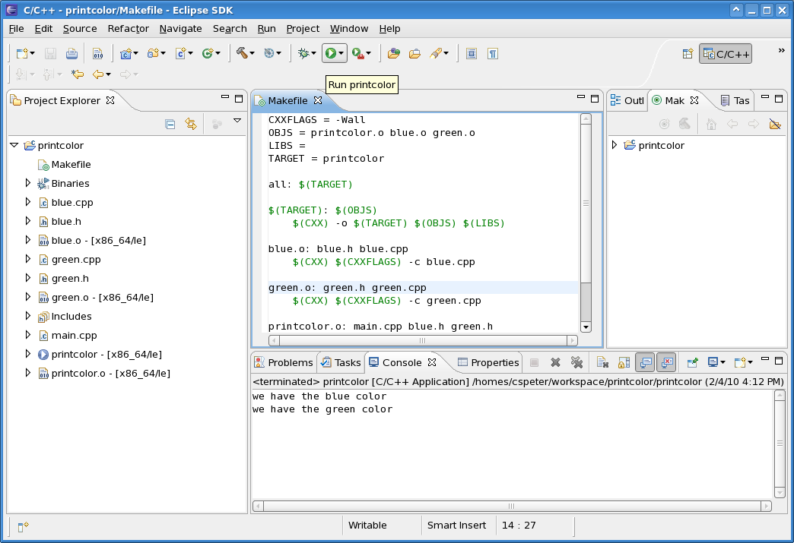

The objective is to learn the separate compilation and the usage of Makefile in both Eclipse IDE and Linux command-prompt environment
Please refer to the following link if you are not familiar with the common Linux commands: http://files.fosswire.com/2007/08/fwunixref.pdf
Use "su" to switch to root account, the password is "comp2012". Then install "nautilus-open-terminal". Log out and log in the virtual machine to activate it. The password of user student is "student".
Suppose we have the following files and we want to make a color printing program out of them: blue.h, blue.cpp, green.h, green.cpp and main.cpp.
You may use Konqueror to browse the lab page, download the files and manipulate the files. In the terminal, type:
konqueror &
Go to ¡°Location¡±, then ¡°Open
Location..¡± to locate the files.
Solution 1: put everything in one line
In the console, type:
g++ blue.cpp green.cpp main.cpp -o printcolor
It works.
Solution 2: Separate compilation and makefile
One thing at a time:
g++ -c blue.cppg++ -c green.cppg++ blue.o green.o main.cpp -o printcolor
If we change green.cpp, we just need to rebuild green.o and printcolor, leaving the blue color files untouched.
Use a makefile to put everything together, thus every time we just need to type "gmake" to do compiling, assembling and linking.
¡¤ It makes compilation much easier. You just need to type one simple short command instead of a long complicated ones. The purpose of the make utility is to determine automatically which pieces of a large program need to be recompiled and then issue the corresponding commands to recompile them.
¡¤ Most of the time software in Unix-like operating systems is installed using gmake/make, not by utilities like InstallShield on the Windows platform. If you encounter any problem during software installation, you will need to examine the makefile. Hence understanding how to use makefile can help you tremendously.
¡¤ To use make, you must first write a file called makefile that describes the relationships among the files in your program and includes the commands for processing the files accordingly.
¡¤ In a program, typically the executable file is updated from the object files, which are in turn created by compiling the source files.
Create and Use a g++ Makefile
You can use gmake (which calls g++) to compile and link your program or object files. When using gmake, it looks for a file called makefile or Makefile. (The name Makefile is preferred as it can easily be distinguished from other files which typically have filenames in lowercase.) You can write all the rules in your makefile to simplify and speed up your compilation and linking process.
Sample Makefile.
To make and use a g++ makefile, do the following in the console:
1. Create a text file called Makefile
¡¤ The simplest way is to type:
pico Makefile
Or you can use any text editor like Vi or Emacs
2. Edit the makefile, add:
¡¤ Variable definitions (optional), in the form:
VARIABLE_NAME = variable_definition
Such as:
TARGET = printcolor
Use the variable by $(VARIABLE_NAME)
¡¤ Dependencies followed by compilation rules in the second line, such as:
blue.o: blue.h blue.cpp
$(CXX) $(CXXFLAGS) -c blue.cpp
Which translates to, blue.o depends on blue.h and blue.cpp, compile blue.o using the rule: g++ (flags) ¨Cc blue.cpp.
The tag all and clean specifies the final target to make, and the rules to clean up.
3. Save and quit editing. Use the makefile by typing:
make or make all
and you should see the program being compiled and the target being created.
Clean up all results by typing:
make clean
Work on Makefile with Eclipse
¡¤ Create a Makefile project "printcolor" under Eclipse.
¡¤ Copy files to the project directory.
¡¤ Choose New > File to add a new Makefile to the current project
¡¤ Type in the content of the Makefile. Here is a sample Makefile based on the above description:
¡¤ Create a make target. Based on the rules defined on the Makefile, the target name should be equal to all
¡¤ Build the project by clicking the hammer button
o You may receive some unknown warning messages. It should be fine if the executable named printcolor is generated (can be viewed from the Project Explorer on the left panel)
o You should notice that Makefile enables the separate compilation
o Parameters
¡¤ -Wall means show all warning messages when compiling a cpp file
¡¤ OBJS stores all the intermediate object files generated during the compilation process
¡¤ LIBS stores external libraries. We don¡¯t require external libraries, so we omit this variable
¡¤ TARGET is the name of the final executable
¡¤ Run the executable printcolor

¡¤ array_all.cpp contains the definition and implementation of the array structure with utility functions as well as the main function
Declaration, Definition and Implementation
In practice, programmers always separate a segment of program source code into three parts: declaration, definition and implementation. The purpose is to separate the interface from the actual implementation to make the program easier to understand and reuse. The objectives are to achieve:
¡¤ Clean and concise header files (*.h)
¡¤ Separate the compilation process to avoid unnecessary recompilation (or to achieve minimum recompilation) when some of the program files are changed
For example, consider the structure Array.
Declaration: Introduce a structure called Array to the compiler, but with only function prototypes without any detailed information provided yet
struct Array {
// ... member variables
};// ... function prototypesvoid ArrayInit(Array& a);...
Definition or implementation: Define the functions so that codes can be generated. They are in the form of the following
void ArrayInit(Array& a) { // ... detailed implementation};¡¡// ... Other functions¡¯ implementation
...
1. Re-factor the program in array_all.cpp to make use of the idea of separate compilation, which is to separate the class Date's definition and implementation in the given date_all.cpp:
o Put the Array¡¯s structure definition and function prototypes into array.h
o Put the functions¡¯ implementation into array.cpp
o Put the main function into main.cpp
2. Add a function, int ArrayProduct(const Array arr), which calculate the product of all the items in the array.
3. Create a g++ Makefile so that it can:
o Compile array.cpp to generate an object file array.o
o Compile main.cpp to generate an object file main.o
o Link the object files and generate the executable code with filename lab02
|
Enter the number of items: 4 Array items: 34 37 28 16 Sum of items: 115 Remove the number: 28 Array items: 34 37 16 Product of items: 20128 |
Part II: (Optional)
1. In Eclipse, create a Makefile project called "array".
2. Copy the re-factored source and header files (array.h, array.cpp, main.cpp) to the project.
3. Complete the Makefile created by Eclipse, so that it can do the same thing as the g++ Makefile created in Part I.
¡¤ A short and easy introduction to Makefile
¡¤ Another easy page
¡¤ A version with a bit more information
¡¤ For more information of g++, please see the reference g++ command line arguments.
© CSE, HKUST | OpenDesign